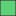

<!doctype html>
<html lang="en">
    <head>
        <meta charset="utf-8">
        <meta http-equiv="X-UA-Compatible" content="IE=edge">
        <meta name="viewport" content="initial-scale=1,user-scalable=no,maximum-scale=1,width=device-width">
        <meta name="mobile-web-app-capable" content="yes">
        <meta name="apple-mobile-web-app-capable" content="yes">
        <link rel="stylesheet" href="https://unpkg.com/leaflet@1.6.0/dist/leaflet.css"><link rel="stylesheet" href="css/L.Control.Locate.min.css">
        <link rel="stylesheet" href="css/qgis2web.css"><link rel="stylesheet" href="css/fontawesome-all.min.css">
        <link rel="stylesheet" href="css/MarkerCluster.css">
        <link rel="stylesheet" href="css/MarkerCluster.Default.css">
        <link rel="stylesheet" href="css/leaflet-control-geocoder.Geocoder.css">
        <link rel="stylesheet" href="css/leaflet-measure.css">
        <link rel="stylesheet" href="style.css">
        
        <style>
        html, body, #map {
            width: 100%;
            height: 100%;
            padding: 0;
            margin: 0;
        }
        </style>
        <title>Geovisor_Taller3_1742832</title>
    </head>
    <body>

        
        <div id="map">
            
            </img>
			
			
        </div>
        <script src="js/qgis2web_expressions.js"></script>
        <script src="https://unpkg.com/leaflet@1.6.0/dist/leaflet.js"></script><script src="js/L.Control.Locate.min.js"></script>
        <script src="https://unpkg.com/leaflet@1.6.0/dist/leaflet.rotatedMarker.js"></script>
        <script src="https://unpkg.com/leaflet@1.6.0/dist/leaflet.pattern.js"></script>
        <script src="js/leaflet-hash.js"></script>
        <script src="js/Autolinker.min.js"></script>
        <script src="js/rbush.min.js"></script>
        <script src="js/labelgun.min.js"></script>
        <script src="js/labels.js"></script>
        <script src="js/leaflet-control-geocoder.Geocoder.js"></script>
        <script src="js/leaflet-measure.js"></script>
        <script src="js/leaflet.markercluster.js"></script>
        <script src="data/barrios_1.js"></script>
        <script src="data/comunas_2.js"></script>
        <script src="data/corregimientos_3.js"></script>
        <script src="data/Jerarquizacion_vial_4.js"></script>
        <script src="data/rios_5.js"></script>
        <script src="data/sitios_interes_6.js"></script>
        <script src="betterscale/L.Control.BetterScale.js"></script>
	    <link rel="stylesheet" href="betterscale/L.Control.BetterScale.css" />
        <link rel="stylesheet" href="https://cdnjs.cloudflare.com/ajax/libs/Leaflet.EasyButton/2.4.0/easy-button.css" />
        <script src="https://cdnjs.cloudflare.com/ajax/libs/Leaflet.EasyButton/2.4.0/easy-button.js"></script>
        <link rel="stylesheet" href="https://leaflet.github.io/Leaflet.draw/src/leaflet.draw.css"/>
	    <script src="https://cdnjs.cloudflare.com/ajax/libs/leaflet.draw/1.0.2/leaflet.draw.js"></script>
        <script src="spin/spin.min.js" charset="utf-8"></script>
	    <script src="spin/leaflet.spin.min.js" charset="utf-8"></script>
        <script src="graticule/Leaflet.Graticule.js"></script>
        <link rel="stylesheet" href="minimap/Control.MiniMap.css" />
	    <script src="minimap/Control.MiniMap.js" type="text/javascript"></script>
        
        
        <script>
        var highlightLayer;
        function highlightFeature(e) {
            highlightLayer = e.target;

            if (e.target.feature.geometry.type === 'LineString') {
              highlightLayer.setStyle({
                color: '#ffff00',
              });
            } else {
              highlightLayer.setStyle({
                fillColor: '#ffff00',
                fillOpacity: 1
              });
            }
        }
        var map = L.map('map', {
            zoomControl:true, maxZoom:28, minZoom:1
        })
        var hash = new L.Hash(map);
        map.attributionControl.setPrefix('<a href="https://github.com/tomchadwin/qgis2web" target="_blank">qgis2web</a> &middot; <a href="https://leafletjs.com" title="A JS library for interactive maps">Leaflet</a> &middot; <a href="https://qgis.org">QGIS</a>');
        var autolinker = new Autolinker({truncate: {length: 30, location: 'smart'}});
        L.control.locate({locateOptions: {maxZoom: 19}}).addTo(map);
        var measureControl = new L.Control.Measure({
            position: 'topleft',
            primaryLengthUnit: 'meters',
            secondaryLengthUnit: 'kilometers',
            primaryAreaUnit: 'sqmeters',
            secondaryAreaUnit: 'hectares'
        });
        measureControl.addTo(map);
        document.getElementsByClassName('leaflet-control-measure-toggle')[0]
        .innerHTML = '';
        document.getElementsByClassName('leaflet-control-measure-toggle')[0]
        .className += ' fas fa-ruler';
        var bounds_group = new L.featureGroup([]);
        function setBounds() {
            if (bounds_group.getLayers().length) {
                map.fitBounds(bounds_group.getBounds());
            }
        }
        map.createPane('pane_OSMStandard_0');
        map.getPane('pane_OSMStandard_0').style.zIndex = 400;
        var layer_OSMStandard_0 = L.tileLayer('http://tile.openstreetmap.org/{z}/{x}/{y}.png', {
            //pane: 'pane_OSMStandard_0',
            opacity: 1.0,
            attribution: '<a href="https://www.openstreetmap.org/copyright">© OpenStreetMap contributors, CC-BY-SA</a>',
            minZoom: 1,
            maxZoom: 28,
            minNativeZoom: 0,
            maxNativeZoom: 19
        });
        layer_OSMStandard_0;
        map.addLayer(layer_OSMStandard_0);
        function pop_barrios_1(feature, layer) {
            layer.on({
                mouseout: function(e) {
                    for (i in e.target._eventParents) {
                        e.target._eventParents[i].resetStyle(e.target);
                    }
                },
                mouseover: highlightFeature,
            });
            var popupContent = '<table>\
                    <tr>\
                        <th scope="row">ID_BARRIO</th>\
                        <td>' + (feature.properties['ID_BARRIO'] !== null ? autolinker.link(feature.properties['ID_BARRIO'].toLocaleString()) : '') + '</td>\
                    </tr>\
                    <tr>\
                        <th scope="row">BARRIO</th>\
                        <td>' + (feature.properties['BARRIO'] !== null ? autolinker.link(feature.properties['BARRIO'].toLocaleString()) : '') + '</td>\
                    </tr>\
                    <tr>\
                        <th scope="row">COMUNA</th>\
                        <td>' + (feature.properties['COMUNA'] !== null ? autolinker.link(feature.properties['COMUNA'].toLocaleString()) : '') + '</td>\
                    </tr>\
                    <tr>\
                        <th scope="row">ESTRA_MODA</th>\
                        <td>' + (feature.properties['ESTRA_MODA'] !== null ? autolinker.link(feature.properties['ESTRA_MODA'].toLocaleString()) : '') + '</td>\
                    </tr>\
                    <tr>\
                        <th scope="row">ÁREA</th>\
                        <td>' + (feature.properties['ÁREA'] !== null ? autolinker.link(feature.properties['ÁREA'].toLocaleString()) : '') + ' m²'+'</td>\
                    </tr>\
                    <tr>\
                        <th scope="row">PERIMETRO</th>\
                        <td>' + (feature.properties['PERIMETRO'] !== null ? autolinker.link(feature.properties['PERIMETRO'].toLocaleString()) : '') +  ' Metros'+'</td>\
                    </tr>\
                </table>';
            layer.bindPopup(popupContent, {maxHeight: 400});
        }

        function style_barrios_1_0() {
            return {
                pane: 'pane_barrios_1',
                opacity: 1,
                color: 'rgba(35,35,35,1.0)',
                dashArray: '',
                lineCap: 'butt',
                lineJoin: 'miter',
                weight: 1.0, 
                fill: true,
                fillOpacity: 1,
                fillColor: 'rgba(19,187,55,0.6705882352941176)',
                interactive: true,
            }
        }
        map.createPane('pane_barrios_1');
        map.getPane('pane_barrios_1').style.zIndex = 401;
        map.getPane('pane_barrios_1').style['mix-blend-mode'] = 'normal';
        var layer_barrios_1 = new L.geoJson(json_barrios_1, {
            attribution: '',
            interactive: true,
            dataVar: 'json_barrios_1',
            layerName: 'layer_barrios_1',
            pane: 'pane_barrios_1',
            onEachFeature: pop_barrios_1,
            style: style_barrios_1_0,
        });
        bounds_group.addLayer(layer_barrios_1);
        map.addLayer(layer_barrios_1);
        function pop_comunas_2(feature, layer) {
            layer.on({
                mouseout: function(e) {
                    for (i in e.target._eventParents) {
                        e.target._eventParents[i].resetStyle(e.target);
                    }
                },
                mouseover: highlightFeature,
            });
            var popupContent = '<table>\
                    <tr>\
                        <th scope="row">COMUNA</th>\
                        <td>' + (feature.properties['COMUNA'] !== null ? autolinker.link(feature.properties['COMUNA'].toLocaleString()) : '') + '</td>\
                    </tr>\
                    <tr>\
                        <th scope="row">NOMBRE</th>\
                        <td>' + (feature.properties['NOMBRE'] !== null ? autolinker.link(feature.properties['NOMBRE'].toLocaleString()) : '') + '</td>\
                    </tr>\
                    <tr>\
                        <th scope="row">ÁREA</th>\
                        <td>' + (feature.properties['ÁREA'] !== null ? autolinker.link(feature.properties['ÁREA'].toLocaleString()) : '') + ' m²'+'</td>\
                    </tr>\
                    <tr>\
                        <th scope="row">PERIMETRO</th>\
                        <td>' + (feature.properties['PERIMETRO'] !== null ? autolinker.link(feature.properties['PERIMETRO'].toLocaleString()) : '') + ' Metros'+ '</td>\
                    </tr>\
                </table>';
            layer.bindPopup(popupContent, {maxHeight: 400});
        }

        function style_comunas_2_0() {
            return {
                pane: 'pane_comunas_2',
                opacity: 1,
                color: 'rgba(35,35,35,1.0)',
                dashArray: '',
                lineCap: 'butt',
                lineJoin: 'miter',
                weight: 3.0, 
                fillOpacity: 0,
                interactive: true,
            }
        }
        map.createPane('pane_comunas_2');
        map.getPane('pane_comunas_2').style.zIndex = 402;
        map.getPane('pane_comunas_2').style['mix-blend-mode'] = 'normal';
        var layer_comunas_2 = new L.geoJson(json_comunas_2, {
            attribution: '',
            interactive: true,
            dataVar: 'json_comunas_2',
            layerName: 'layer_comunas_2',
            pane: 'pane_comunas_2',
            onEachFeature: pop_comunas_2,
            style: style_comunas_2_0,
        });
        bounds_group.addLayer(layer_comunas_2);
        map.addLayer(layer_comunas_2);
        function pop_corregimientos_3(feature, layer) {
            layer.on({
                mouseout: function(e) {
                    for (i in e.target._eventParents) {
                        e.target._eventParents[i].resetStyle(e.target);
                    }
                },
                mouseover: highlightFeature,
            });
            var popupContent = '<table>\
                    <tr>\
                        <th scope="row">ID_CORREG</th>\
                        <td>' + (feature.properties['ID_CORREG'] !== null ? autolinker.link(feature.properties['ID_CORREG'].toLocaleString()) : '') + '</td>\
                    </tr>\
                    <tr>\
                        <th scope="row">CORREGIMIE</th>\
                        <td>' + (feature.properties['CORREGIMIE'] !== null ? autolinker.link(feature.properties['CORREGIMIE'].toLocaleString()) : '') + '</td>\
                    </tr>\
                    <tr>\
                        <th scope="row">ACUERDO</th>\
                        <td>' + (feature.properties['ACUERDO'] !== null ? autolinker.link(feature.properties['ACUERDO'].toLocaleString()) : '') + '</td>\
                    </tr>\
                    <tr>\
                        <th scope="row">ÁREA</th>\
                        <td>' + (feature.properties['ÁREA'] !== null ? autolinker.link(feature.properties['ÁREA'].toLocaleString()) : '') + ' m²'+ '</td>\
                    </tr>\
                    <tr>\
                        <th scope="row">PERIMETRO</th>\
                        <td>' + (feature.properties['PERIMETRO'] !== null ? autolinker.link(feature.properties['PERIMETRO'].toLocaleString()) : '') + ' Metros'+ '</td>\
                    </tr>\
                </table>';
            layer.bindPopup(popupContent, {maxHeight: 400});
        }

        function style_corregimientos_3_0() {
            return {
                pane: 'pane_corregimientos_3',
                opacity: 1,
                color: 'rgba(35,35,35,1.0)',
                dashArray: '',
                lineCap: 'butt',
                lineJoin: 'miter',
                weight: 1.0, 
                fill: true,
                fillOpacity: 1,
                fillColor: 'rgba(55,129,30,0.7333333333333333)',
                interactive: true,
            }
        }
        map.createPane('pane_corregimientos_3');
        map.getPane('pane_corregimientos_3').style.zIndex = 403;
        map.getPane('pane_corregimientos_3').style['mix-blend-mode'] = 'normal';
        var layer_corregimientos_3 = new L.geoJson(json_corregimientos_3, {
            attribution: '',
            interactive: true,
            dataVar: 'json_corregimientos_3',
            layerName: 'layer_corregimientos_3',
            pane: 'pane_corregimientos_3',
            onEachFeature: pop_corregimientos_3,
            style: style_corregimientos_3_0,
        });
        bounds_group.addLayer(layer_corregimientos_3);
        map.addLayer(layer_corregimientos_3);
        function pop_Jerarquizacion_vial_4(feature, layer) {
            layer.on({
                mouseout: function(e) {
                    for (i in e.target._eventParents) {
                        e.target._eventParents[i].resetStyle(e.target);
                    }
                },
                mouseover: highlightFeature,
            });
            var popupContent = '<table>\
                    <tr>\
                        <th scope="row">tipo_via</th>\
                        <td>' + (feature.properties['tipo_via'] !== null ? autolinker.link(feature.properties['tipo_via'].toLocaleString()) : '') + '</td>\
                    </tr>\
                    <tr>\
                        <th scope="row">estado_act</th>\
                        <td>' + (feature.properties['estado_act'] !== null ? autolinker.link(feature.properties['estado_act'].toLocaleString()) : '') + '</td>\
                    </tr>\
                    <tr>\
                        <th scope="row">nombre</th>\
                        <td>' + (feature.properties['nombre'] !== null ? autolinker.link(feature.properties['nombre'].toLocaleString()) : '') + '</td>\
                    </tr>\
                </table>';
            layer.bindPopup(popupContent, {maxHeight: 400});
        }

        function style_Jerarquizacion_vial_4_0() {
            return {
                pane: 'pane_Jerarquizacion_vial_4',
                opacity: 1,
                color: 'rgba(137,142,144,1.0)',
                dashArray: '',
                lineCap: 'square',
                lineJoin: 'bevel',
                weight: 1.0,
                fillOpacity: 0,
                interactive: true,
            }
        }
        map.createPane('pane_Jerarquizacion_vial_4');
        map.getPane('pane_Jerarquizacion_vial_4').style.zIndex = 404;
        map.getPane('pane_Jerarquizacion_vial_4').style['mix-blend-mode'] = 'normal';
        var layer_Jerarquizacion_vial_4 = new L.geoJson(json_Jerarquizacion_vial_4, {
            attribution: '',
            interactive: true,
            dataVar: 'json_Jerarquizacion_vial_4',
            layerName: 'layer_Jerarquizacion_vial_4',
            pane: 'pane_Jerarquizacion_vial_4',
            onEachFeature: pop_Jerarquizacion_vial_4,
            style: style_Jerarquizacion_vial_4_0,
        });
        bounds_group.addLayer(layer_Jerarquizacion_vial_4);
        //map.addLayer(layer_Jerarquizacion_vial_4);
        function pop_rios_5(feature, layer) {
            layer.on({
                mouseout: function(e) {
                    for (i in e.target._eventParents) {
                        e.target._eventParents[i].resetStyle(e.target);
                    }
                },
                mouseover: highlightFeature,
            });
            var popupContent = '<table>\
                    <tr>\
                        <th scope="row">NOMBRE</th>\
                        <td>' + (feature.properties['NOMBRE'] !== null ? autolinker.link(feature.properties['NOMBRE'].toLocaleString()) : '') + '</td>\
                    </tr>\
                    <tr>\
                        <th scope="row">ÁREA</th>\
                        <td>' + (feature.properties['ÁREA'] !== null ? autolinker.link(feature.properties['ÁREA'].toLocaleString()) : '') + ' m²'+ '</td>\
                    </tr>\
                    <tr>\
                        <th scope="row">PERIMETRO</th>\
                        <td>' + (feature.properties['PERIMETRO'] !== null ? autolinker.link(feature.properties['PERIMETRO'].toLocaleString()) : '') + ' Metros'+'</td>\
                    </tr>\
                </table>';
            layer.bindPopup(popupContent, {maxHeight: 400});
        }

        function style_rios_5_0() {
            return {
                pane: 'pane_rios_5',
                opacity: 1,
                color: 'rgba(23,170,255,1.0)',
                dashArray: '',
                lineCap: 'butt',
                lineJoin: 'miter',
                weight: 2.0, 
                fill: true,
                fillOpacity: 1,
                fillColor: 'rgba(23,170,255,1.0)',
                interactive: true,
            }
        }
        map.createPane('pane_rios_5');
        map.getPane('pane_rios_5').style.zIndex = 405;
        map.getPane('pane_rios_5').style['mix-blend-mode'] = 'normal';
        var layer_rios_5 = new L.geoJson(json_rios_5, {
            attribution: '',
            interactive: true,
            dataVar: 'json_rios_5',
            layerName: 'layer_rios_5',
            pane: 'pane_rios_5',
            onEachFeature: pop_rios_5,
            style: style_rios_5_0,
        });
        bounds_group.addLayer(layer_rios_5);
        map.addLayer(layer_rios_5);
        function pop_sitios_interes_6(feature, layer) {
            layer.on({
                mouseout: function(e) {
                    for (i in e.target._eventParents) {
                        e.target._eventParents[i].resetStyle(e.target);
                    }
                },
                mouseover: highlightFeature,
            });
            var popupContent = '<table>\
                    <tr>\
                        <th scope="row">NOMBRE</th>\
                        <td>' + (feature.properties['NOMBRE'] !== null ? autolinker.link(feature.properties['NOMBRE'].toLocaleString()) : '') + '</td>\
                    </tr>\
                    <tr>\
                        <th scope="row">UBICACION</th>\
                        <td>' + (feature.properties['UBICACION'] !== null ? autolinker.link(feature.properties['UBICACION'].toLocaleString()) : '') + '</td>\
                    </tr>\
                    <tr>\
                        <th scope="row">TIPO</th>\
                        <td>' + (feature.properties['TIPO'] !== null ? autolinker.link(feature.properties['TIPO'].toLocaleString()) : '') + '</td>\
                    </tr>\
                    <tr>\
                        <th scope="row">ID_BARRIO</th>\
                        <td>' + (feature.properties['ID_BARRIO'] !== null ? autolinker.link(feature.properties['ID_BARRIO'].toLocaleString()) : '') + '</td>\
                    </tr>\
                    <tr>\
                        <th scope="row">BARRIO</th>\
                        <td>' + (feature.properties['BARRIO'] !== null ? autolinker.link(feature.properties['BARRIO'].toLocaleString()) : '') + '</td>\
                    </tr>\
                    <tr>\
                        <th scope="row">COMUNA</th>\
                        <td>' + (feature.properties['COMUNA'] !== null ? autolinker.link(feature.properties['COMUNA'].toLocaleString()) : '') + '</td>\
                    </tr>\
                </table>';
            layer.bindPopup(popupContent, {maxHeight: 400});
        }

        function style_sitios_interes_6_0() {
            return {
                pane: 'pane_sitios_interes_6',
                radius: 3.6,
                opacity: 1,
                color: 'rgba(35,35,35,1.0)',
                dashArray: '',
                lineCap: 'butt',
                lineJoin: 'miter',
                weight: 1,
                fill: true,
                fillOpacity: 1,
                fillColor: 'rgba(183,72,75,1.0)',
                interactive: true,
            }
        }
        map.createPane('pane_sitios_interes_6');
        map.getPane('pane_sitios_interes_6').style.zIndex = 406;
        map.getPane('pane_sitios_interes_6').style['mix-blend-mode'] = 'normal';
        var layer_sitios_interes_6 = new L.geoJson(json_sitios_interes_6, {
            attribution: '',
            interactive: true,
            dataVar: 'json_sitios_interes_6',
            layerName: 'layer_sitios_interes_6',
            pane: 'pane_sitios_interes_6',
            onEachFeature: pop_sitios_interes_6,
            pointToLayer: function (feature, latlng) {
                var context = {
                    feature: feature,
                    variables: {}
                };
                return L.circleMarker(latlng, style_sitios_interes_6_0(feature));
            },
        });
        var cluster_sitios_interes_6 = new L.MarkerClusterGroup({showCoverageOnHover: false,
            spiderfyDistanceMultiplier: 2});
        cluster_sitios_interes_6.addLayer(layer_sitios_interes_6);

        bounds_group.addLayer(layer_sitios_interes_6);
        cluster_sitios_interes_6.addTo(map);
            var title = new L.Control();
            title.onAdd = function (map) {
                this._div = L.DomUtil.create('div', 'info');
                this.update();
                return this._div;
            };
            title.update = function () {
                this._div.innerHTML = '<h2>Geovisor_Taller3_1742832</h2>';
            };
            title.addTo(map);
            var abstract = new L.Control({'position':'bottomright'});
            abstract.onAdd = function (map) {
                this._div = L.DomUtil.create('div',
                'leaflet-control abstract');
                this._div.id = 'abstract'

                    abstract.show();
                    return this._div;
                };
                abstract.show = function () {
                    this._div.classList.remove("abstract");
                    this._div.classList.add("abstractUncollapsed");
                    this._div.innerHTML = 'Eduardo Tamayo<br />1742832';
            };
            abstract.addTo(map);
        var osmGeocoder = new L.Control.Geocoder({
            collapsed: true,
            position: 'topleft',
            text: 'Search',
            title: 'Testing'
        }).addTo(map);
            //circulo 
            var circle = L.circle([3.522459936324753, -76.41708823622459], {
        color: 'green',
        fillColor: 'green',
        fillOpacity: 0.5,
        radius: 500
    }).addTo(map);
    
        
    L.latlngGraticule({
			showLabel: true,
			opacity:0.5,
            weight: 0.5,
			color: 'black',
			zoomInterval: [
				{start: 13, end: 18, interval: 0.05}
			]
		}).addTo(map);
        //añadir mapa base 
        var mapabase2 = L.tileLayer('https://{s}.tile.openstreetmap.fr/hot/{z}/{x}/{y}.png', 
            {
                maxZoom: 18,
                attribution: '&copy; <a href="https://www.openstreetmap.org/copyright">OpenStreetMap</a>' 
            });
	

        
        //idesc
        //cargar capas de la idesc de cualquier tematica
        var AreasProtegidas= L.tileLayer.wms('http://ws-idesc.cali.gov.co/geoserver/pot_2014/wms?service=WMS&version=1.1.0',
		{
		layers: 'amb_eep_areas_protegidas',
		format: 'image/png',
        transparent: true,
        opacity: 1,
        zIndex: 9999
		});
		map.addLayer(AreasProtegidas );
        //leyenda.addOverlay(AreasProtegidas, 'AreasProtegidas');

        var CurvasdeNivel = L.tileLayer.wms('http://ws-idesc.cali.gov.co/geoserver/pot_2014/wms?service=WMS&version=1.1.0',
		{
		layers: 'amb_eep_curvas_proteccion_cimas',
		format: 'image/png',
        transparent: true,
        zIndex: 9999
		});
		map.addLayer(CurvasdeNivel );
        //leyenda.addOverlay(CurvasdeNivel, 'CurvasdeNivel');

        var Ecoparques= L.tileLayer.wms('http://ws-idesc.cali.gov.co:8081/geoserver/wms?service=WMS&version=1.1.0',
		{
		layers: 'amb_eep_aeie_ecoparques',
		format: 'image/png',
        transparent: true,
        opacity: 0.5
		});
		map.addLayer(Ecoparques );

        var Humedales= L.tileLayer.wms('http://ws-idesc.cali.gov.co/geoserver/pot_2014/wms?service=WMS&version=1.1.0',
		{
		layers: 'bcs_hid_humedales',
		format: 'image/png',
        transparent: true,
		});
		map.addLayer(Humedales );

        var EqServiciosRuralesBasicos= L.tileLayer.wms('http://ws-idesc.cali.gov.co/geoserver/pot_2014/wms?service=WMS&version=1.1.0',
		{
		layers: 'eqp_equipamiento_rural_servicio_basico',
		format: 'image/png',
        transparent: true,
		});
		map.addLayer(EqServiciosRuralesBasicos );

        var ColinasyCerros= L.tileLayer.wms('http://ws-idesc.cali.gov.co/geoserver/pot_2014/wms?service=WMS&version=1.1.0',
		{
		layers: 'amb_eep_aeie_alturas_colinas_cerros',
		format: 'image/png',
        transparent: true,
		});
		map.addLayer(ColinasyCerros );


        document.getElementsByClassName('leaflet-control-geocoder-icon')[0]
        .className += ' fa fa-search';
        document.getElementsByClassName('leaflet-control-geocoder-icon')[0]
        .title += 'Search for a place';
        var baseMaps = {};
        L.control.layers(baseMaps,{' sitios_interes': cluster_sitios_interes_6,
        ' rios': layer_rios_5,
        ' Jerarquizacion_vial': layer_Jerarquizacion_vial_4,
        ' corregimientos': layer_corregimientos_3,
        ' comunas': layer_comunas_2,
        //' Estadio Deportivo Cali': circle,
        ' barrios': layer_barrios_1,
        "OSM Standard": layer_OSMStandard_0,
        "Estadio Deportivo Cali":circle,
        "Áreas protegidas":AreasProtegidas,
        "Curvas de Nivel":CurvasdeNivel,
        "Ecoparques":Ecoparques,
        "Humedales":Humedales,
        "Equipamiento de Servicios Rurales Básicos":EqServiciosRuralesBasicos,
        "Colinas y Cerros":ColinasyCerros,
        "Mapa Base 2":mapabase2,}).addTo(map);
        setBounds();

        //añadir escala
        L.control.scale({position: 'bottomleft'}).addTo(map);
        L.control.betterscale({position:'bottomright'}).addTo(map);

        var popup = L.popup();

        function onMapClick(e) {
                popup
                    .setLatLng(e.latlng)
                    .setContent(' <table>\
                    <tr>\
                        <th scope="row">LONGITUD    </th>\
                        <td>' + e.latlng.lng + '</td>\
                    </tr>\
                    <tr>\
                        <th scope="row">LATITUD    </th>\
                        <td>'+ e.latlng.lat + '</td>\
                    </tr>\
                </table> </center>'
                    )
                    .openOn(map);
            }

            map.on('click', onMapClick);

            
circle.bindPopup("<center>ESTADIO DEPORTIVO CALI</center>"+"<center>El Estadio Deportivo Cali es un estadio de fútbol en propiedad del equipo Deportivo Cali. Es el escenario deportivo con mayor capacidad en Colombia. Se encuentra ubicado en el área metropolitana de Cali, en la zona rural de Palmira, en el km 8 de la recta intermunicipal entre ambos municipios.</center>");
        
// boton para reiniciar 
    L.easyButton('', function() 
		{
		alert('La pagina se reiniciará');
		location.reload();

	  	}).addTo(map);
        

        //añadir cuadricula de coordenadas
        L.latlngGraticule({
			showLabel: true,
			opacity:0.5,
            weight: 0.5,
			color: 'black',
			zoomInterval: [
				{start: 1, end: 28, interval: 0.25}
			]
		}).addTo(map);
        // Añadir minimapa

    var osmUrl='http://{s}.tile.openstreetmap.org/{z}/{x}/{y}.png';
	    var osmAttrib='Map data &copy; OpenStreetMap contributors';

        var osm2 = new L.TileLayer(osmUrl, {minZoom: 0, maxZoom: 8, attribution: osmAttrib });
		var miniMap2 = new L.Control.MiniMap(osm2, { toggleDisplay: true }).addTo(map);

          var drawnItems = new L.FeatureGroup();
        var drawControl = new L.Control.Draw({
				position: 'topleft',
				edit: {
					featureGroup: drawnItems,
					remove: true,
					edit: false,
				},
				draw: {
					circlemarker: true,
					circle:true,
					rectangle:false,
					marker:false,
				}
			});
			map.addControl(drawControl);
			
	map.on(L.Draw.Event.CREATED, function (e) {
			    var type = e.layerType,
			        layer = e.layer;

			    if (type === 'marker') {
			        layer.bindPopup('A popup!');
			    }

			    drawnItems.addLayer(layer);
				map.addLayer(drawnItems);
			});

	
	map.spin(false);

	var printer = L.easyPrint({
      		tileLayer: mapabase,
      		sizeModes: ['Current', 'A4Landscape', 'A4Portrait'],
      		filename: 'myMap',
      		exportOnly: true,
      		hideControlContainer: true
		}).addTo(map);

		function manualPrint () {
			printer.printMap('CurrentSize', 'MyManualPrint')
		}


        </script>
    </body>
</html>
